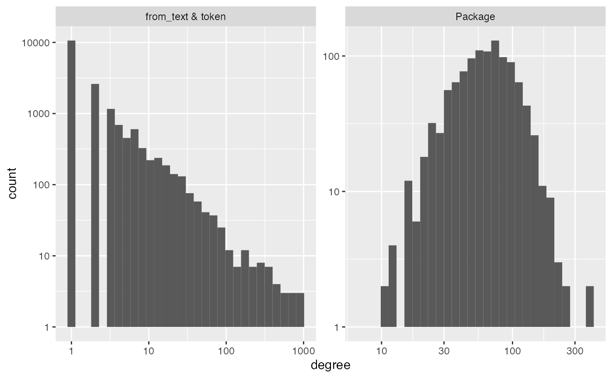
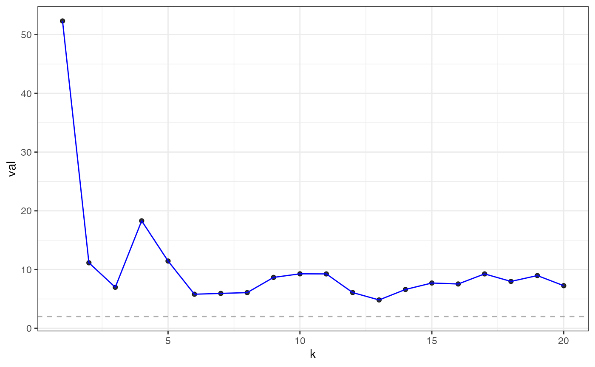
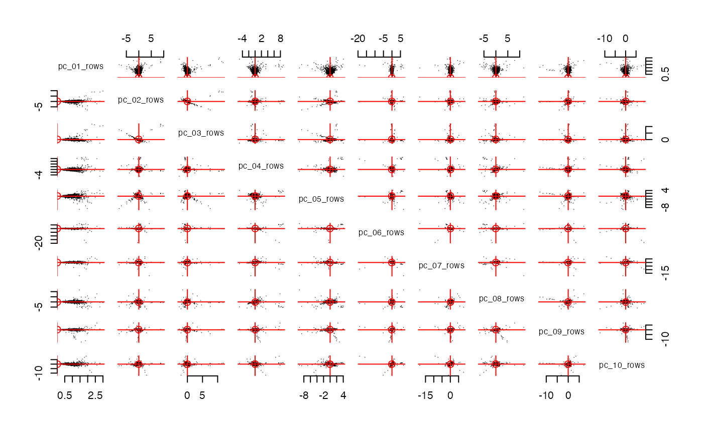
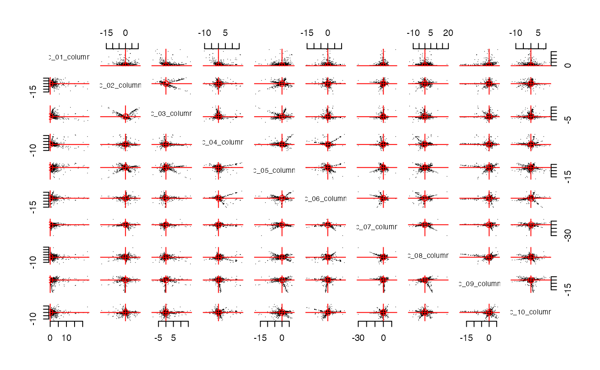
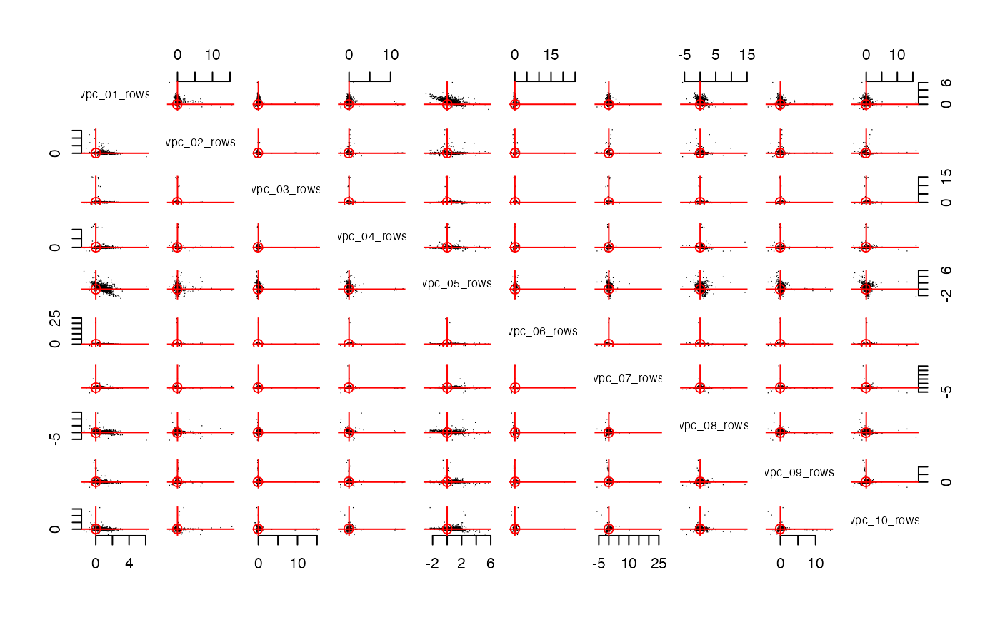
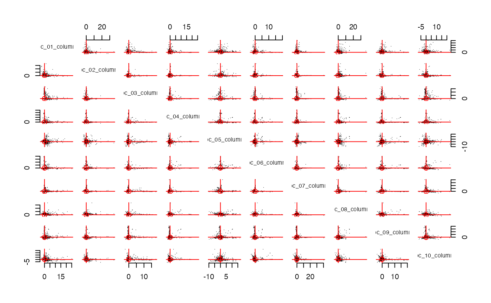

This document shows how you can use parse_text inside
the function make_interaction_model.
library(dplyr)
#>
#> Attaching package: 'dplyr'
#> The following objects are masked from 'package:stats':
#>
#> filter, lag
#> The following objects are masked from 'package:base':
#>
#> intersect, setdiff, setequal, union
library(longpca)Recall that the basic use of make_interaction_model in
the flights data:
library(nycflights13)
formula = ~ (month & day)*(dest)
im = make_interaction_model(flights, formula)
# pcs = pca(im, k = 6)In this example, the formula is
~ (month & day)*(dest). So, the rows are indexed by the
unique values of month and day and the columns
are indexed by the unique values of dest.
im$row_universe
#> # A tibble: 365 × 4
#> month day n row_num
#> <int> <int> <int> <int>
#> 1 11 27 1014 1
#> 2 7 11 1006 2
#> 3 7 8 1004 3
#> 4 7 10 1004 4
#> 5 12 2 1004 5
#> 6 7 18 1003 6
#> 7 7 25 1003 7
#> 8 7 12 1002 8
#> 9 7 9 1001 9
#> 10 7 17 1001 10
#> # ℹ 355 more rows
im$column_universe
#> # A tibble: 105 × 3
#> dest n col_num
#> <chr> <int> <int>
#> 1 ORD 17283 1
#> 2 ATL 17215 2
#> 3 LAX 16174 3
#> 4 BOS 15508 4
#> 5 MCO 14082 5
#> 6 CLT 14064 6
#> 7 SFO 13331 7
#> 8 FLL 12055 8
#> 9 MIA 11728 9
#> 10 DCA 9705 10
#> # ℹ 95 more rowsIf our data contains sentences, or sequences of id’s
(e.g. words/bi-grams/etc), then the “unique values” need to first be
parsed/extracted. For example, loaded into longpca is a toy
data set all_packages. It is about 20000 rows. Each row
gives information about one R package.
# you can get a fresh version here:
# all_packages = available.packages() %>% as_tibble()
all_packages |> select(Package, Imports)
#> # A tibble: 20,319 × 2
#> Package Imports
#> <chr> <chr>
#> 1 A3 NA
#> 2 AalenJohansen NA
#> 3 AATtools magrittr, dplyr, doParallel, foreach
#> 4 ABACUS ggplot2 (>= 3.1.0), shiny (>= 1.3.1),
#> 5 abasequence NA
#> 6 abbreviate NA
#> 7 abc NA
#> 8 abc.data NA
#> 9 ABC.RAP graphics, stats, utils
#> 10 ABCanalysis plotrix
#> # ℹ 20,309 more rowsNotice how the column Imports gives a “csv” of other
packages. We can “extract” these values with
parse_text = TRUE:
im_imports = make_interaction_model(all_packages, ~Package*Imports, parse_text= TRUE)
im_imports$row_universe
#> # A tibble: 20,319 × 3
#> Package n row_num
#> <chr> <int> <int>
#> 1 Seurat 64 1
#> 2 tidyverse 60 2
#> 3 radiant.data 58 3
#> 4 radiant.model 58 4
#> 5 SSDM 55 5
#> 6 BasketballAnalyzeR 53 6
#> 7 tRigon 49 7
#> 8 AFM 48 8
#> 9 dextergui 48 9
#> 10 proteus 48 10
#> # ℹ 20,309 more rows
im_imports$column_universe
#> # A tibble: 6,230 × 4
#> from_text token n col_num
#> <chr> <chr> <int> <int>
#> 1 Imports stats 5442 1
#> 2 Imports utils 3423 2
#> 3 Imports dplyr 3299 3
#> 4 Imports methods 3210 4
#> 5 Imports ggplot2 3135 5
#> 6 Imports rcpp 2548 6
#> 7 Imports rlang 2172 7
#> 8 Imports graphics 2158 8
#> 9 Imports magrittr 1954 9
#> 10 Imports stringr 1698 10
#> # ℹ 6,220 more rowsUnder the hood, this calls tidytext::unnest_tokens to
convert Imports into a “bag-of-words”. So, the columns are
now indexed by the unique packages that are imported. There are 20,319
total Packages in all_packages and each one
forms a “row” in im_imports. Only 6,230 of these packages
have been imported by another package. Each of these forms a “column” in
im_imports. Here “row” and “column” are in quotes because
im_imports is not a matrix, but there is a matrix “under
the hood” that has these rows and columns.
Additional arguments to make_interaction_model are
passed off to tidytext::unest_tokens. For example, by
default it puts the imported packages into lower case. We can turn that
off…
im_imports = make_interaction_model(all_packages, ~Package*Imports, parse_text= TRUE, to_lower = FALSE)
im_imports$column_universe
#> # A tibble: 6,230 × 4
#> from_text token n col_num
#> <chr> <chr> <int> <int>
#> 1 Imports stats 5442 1
#> 2 Imports utils 3423 2
#> 3 Imports dplyr 3299 3
#> 4 Imports methods 3210 4
#> 5 Imports ggplot2 3135 5
#> 6 Imports Rcpp 2548 6
#> 7 Imports rlang 2172 7
#> 8 Imports graphics 2158 8
#> 9 Imports magrittr 1954 9
#> 10 Imports stringr 1698 10
#> # ℹ 6,220 more rowsNotice how Rcpp in row 6 of the
$column_universe was previously rcpp (lower
case). You could parse a different variable instead. For example,
im_description = make_interaction_model(top_packages,~Package*Description, parse_text = TRUE, to_lower= TRUE)
diagnose(im_description)
#> Warning in scale_y_log10(): log-10 transformation introduced
#> infinite values.
#> Warning: Removed 7 rows containing missing values or values outside the scale range
#> (`geom_bar()`).
#> # A tibble: 6 × 3
#> measurement Package `from_text & token`
#> <chr> <dbl> <dbl>
#> 1 number_of_items 1094 7878
#> 2 average_degree 38 5
#> 3 median_degree 33 1
#> 4 percent_le_1 0 57
#> 5 percent_le_2 0 71
#> 6 percent_le_3 0 77
im_description$column_universe
#> # A tibble: 7,878 × 4
#> from_text token n col_num
#> <chr> <chr> <int> <int>
#> 1 Description and 2571 1
#> 2 Description the 1999 2
#> 3 Description of 1388 3
#> 4 Description for 1350 4
#> 5 Description to 1104 5
#> 6 Description a 1013 6
#> 7 Description in 722 7
#> 8 Description functions 581 8
#> 9 Description data 541 9
#> 10 Description package 515 10
#> # ℹ 7,868 more rowsHere we see the stopwords. These will form high degree nodes in your
interaction_model graph. A factor that loads heavily on
these is often a factor that indicates “document length”.
You can also parse multiple columns with the &:
im_imports_authors = make_interaction_model(top_packages, ~Package*(Imports&Author&Description&Title), parse_text = TRUE)
im_imports_authors$row_universe
#> # A tibble: 1,094 × 3
#> Package n row_num
#> <chr> <int> <int>
#> 1 broom 671 1
#> 2 DescTools 562 2
#> 3 ff 488 3
#> 4 knitr 430 4
#> 5 ape 411 5
#> 6 spatstat 392 6
#> 7 spdep 381 7
#> 8 netmeta 346 8
#> 9 Seurat 339 9
#> 10 spatstat.linnet 333 10
#> # ℹ 1,084 more rows
im_imports_authors$column_universe
#> # A tibble: 17,696 × 4
#> from_text token n col_num
#> <chr> <chr> <int> <int>
#> 1 Author ctb 2744 1
#> 2 Description and 2571 2
#> 3 Author aut 2077 3
#> 4 Description the 1999 4
#> 5 Description of 1388 5
#> 6 Description for 1350 6
#> 7 Description to 1104 7
#> 8 Author https 1048 8
#> 9 Description a 1013 9
#> 10 Author orcid.org 1008 10
#> # ℹ 17,686 more rowsSo, let’s do a quick analysis. We see that the tokens are very very
sparse, with 64% of tokens appearing only once! We will want to keep an
eye out for localization in the streaks plot.
diagnose(im_imports_authors)
#> Warning in scale_y_log10(): log-10 transformation introduced
#> infinite values.
#> Warning: Removed 5 rows containing missing values or values outside the scale range
#> (`geom_bar()`).
#> # A tibble: 6 × 3
#> measurement Package `from_text & token`
#> <chr> <dbl> <dbl>
#> 1 number_of_items 1094 17696
#> 2 average_degree 70 4
#> 3 median_degree 62 1
#> 4 percent_le_1 0 60
#> 5 percent_le_2 0 75
#> 6 percent_le_3 0 81Because it is so sparse, I’m going to use more bootstraps than
default in pick_dim; 20 should be enough.

eigcv
#> Estimated graph dimension: 20
#>
#> Number of bootstraps: 20
#> Edge splitting probabaility: 0.1
#> Significance level: 0.05
#>
#> ------------ Summary of Tests ------------
#> k z pvals padj
#> 1 52.225100 0.000000e+00 0.000000e+00
#> 2 10.489027 4.851107e-26 4.851107e-26
#> 3 7.321142 1.229351e-13 1.229351e-13
#> 4 18.463016 2.049021e-76 2.049021e-76
#> 5 11.746910 3.662429e-32 3.662429e-32
#> 6 4.891186 5.011504e-07 5.011504e-07
#> 7 4.856658 5.969165e-07 5.969165e-07
#> 8 7.381439 7.829381e-14 7.829381e-14
#> 9 9.467716 1.430145e-21 1.430145e-21
#> 10 9.276305 8.772864e-21 8.772864e-21
#> 11 9.084343 5.216360e-20 5.216360e-20
#> 12 5.622308 9.421158e-09 9.421158e-09
#> 13 4.720068 1.178829e-06 1.178829e-06
#> 14 6.471448 4.853416e-11 4.853416e-11
#> 15 8.032066 4.792229e-16 4.792229e-16
#> 16 8.330619 4.021024e-17 4.021024e-17
#> 17 8.209523 1.110348e-16 1.110348e-16
#> 18 7.532892 2.481433e-14 2.481433e-14
#> 19 8.500501 9.438711e-18 9.438711e-18
#> 20 7.048323 9.054337e-13 9.054337e-13I’m going to pick 10 for convenience.

streaks(pcs, "columns")

streaks(spcs, "columns")
For example, the second rotated component looks to pick up the cluster of r packages for making html things:
top(spcs, 2,keep_how_many = 15)
#> $top_rows
#> # A tibble: 15 × 2
#> Package vpc_02_rows
#> <chr> <dbl>
#> 1 shiny 15.5
#> 2 rmarkdown 12.3
#> 3 crosstalk 9.74
#> 4 leaflet.extras 7.08
#> 5 bookdown 7.00
#> 6 httpuv 6.61
#> 7 leaflet 6.54
#> 8 bslib 6.05
#> 9 jquerylib 5.18
#> 10 fresh 4.72
#> 11 reactable 4.65
#> 12 dygraphs 4.63
#> 13 sass 4.39
#> 14 rhandsontable 4.36
#> 15 DT 4.24
#>
#> $top_columns
#> # A tibble: 20 × 3
#> from_text token vpc_02_columns
#> <chr> <chr> <dbl>
#> 1 Author library 35.2
#> 2 Author bootstrap 27.9
#> 3 Author jquery 26.3
#> 4 Author contributors 18.7
#> 5 Author cph 18.3
#> 6 Author plugin 17.9
#> 7 Author ui 14.2
#> 8 Author leaflet 13.4
#> 9 Imports htmltools 13.4
#> 10 Author inc 13.4
#> 11 Author authors 13.0
#> 12 Author inst 12.6
#> 13 Author authors.txt 12.6
#> 14 Author carson 12.4
#> 15 Author sievert 12.4
#> 16 Description tidy -3.04
#> 17 Imports tidyr -3.17
#> 18 Imports dplyr -3.20
#> 19 Imports tibble -3.59
#> 20 Description data -3.85